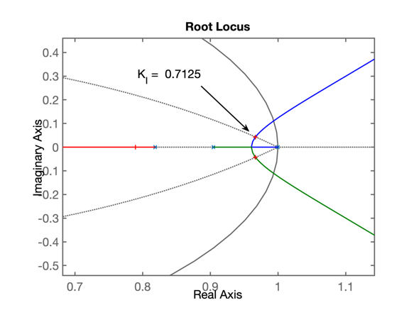
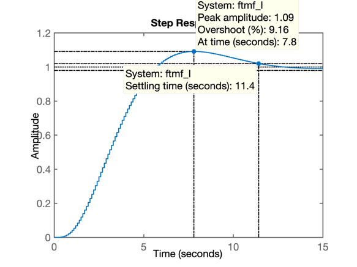
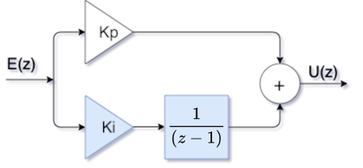
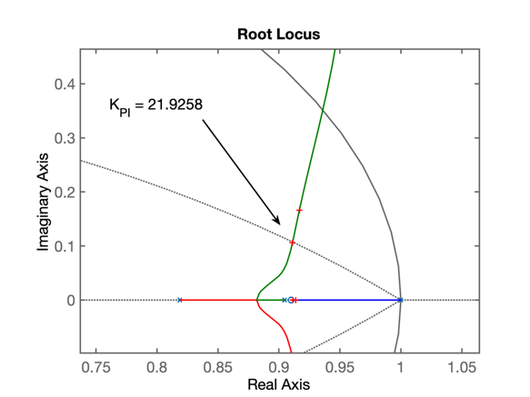
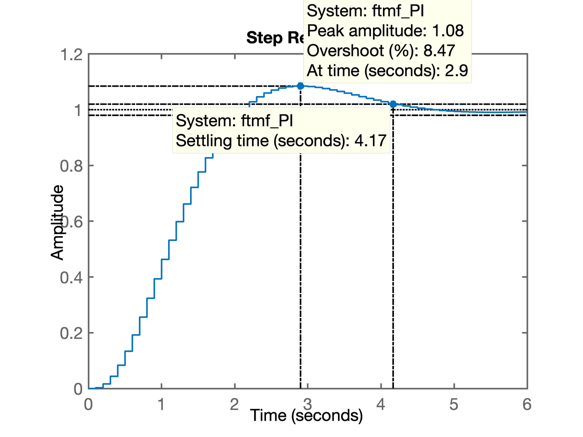
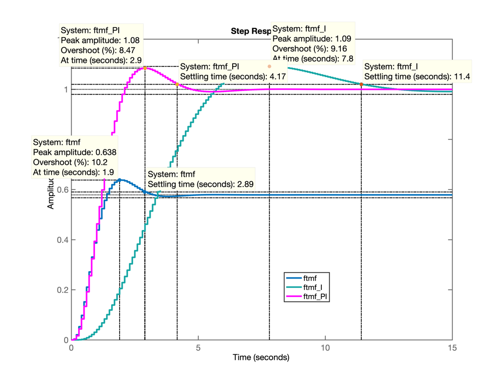
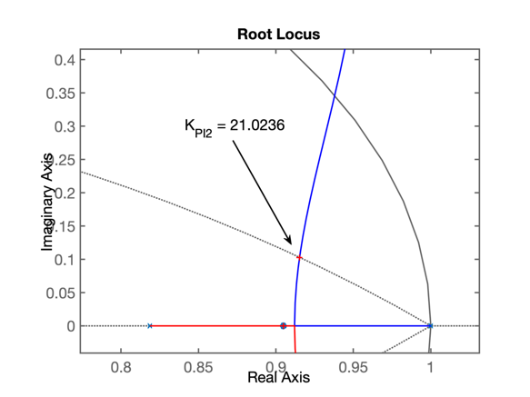
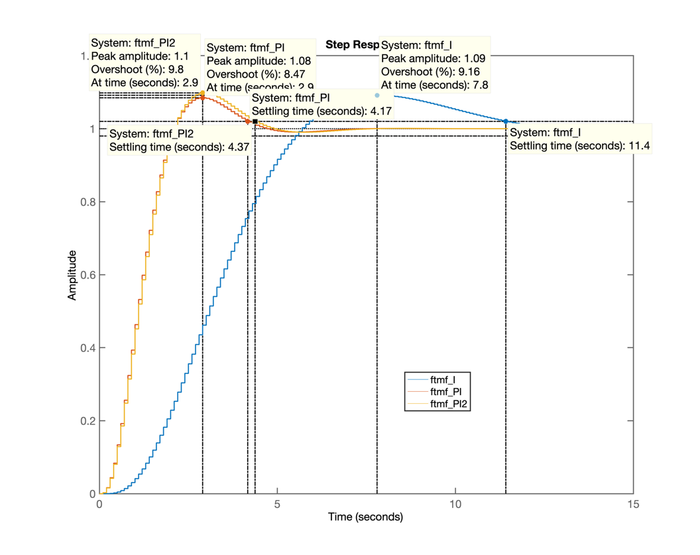

Aula de 14/05/2020.
>> pwd % confirmando diretório atual de trabalho (onde serão gravados arquivos)
ans =
'/Volumes/Data/Users/fernandopassold/Documents/MATLAB/aula_13_05_2020'
>> load dados % Recuperando dados da aula passada
>> zpk(G) % confirmando variável G(s): planta adotada
ans =
1
------------------
(s+10) (s+2) (s+1)
Continuous-time zero/pole/gain model.
>> OS % recordando o overshoot adotado
OS =
10
>> diary aula_14_05_2020.txt % salvando comandos usados no MatlabUm integrador é caracterizado por 1 pólo em \(z=1\). Então um simples integrador puro segue a equação:
\[ C(z)=\dfrac{K_i}{z-1} \]
onde \(K_i\) é o ganho pretendido para este controlador.
Realizando o projeto deste controlador no Matlab:
>> C_I=tf( 1 , [ 1 -1 ] , T )
C_I =
1
-----
z - 1
Sample time: 0.1 seconds
Discrete-time transfer function.
>> % calculando a FTMA(z)=C(z)*BoG(z)
>> ftma_I=C_I*BoG;
zpk(ftma_I)
ans =
0.00012224 (z+2.747) (z+0.1903)
--------------------------------------
(z-1) (z-0.9048) (z-0.8187) (z-0.3679)
Sample time: 0.1 seconds
Discrete-time zero/pole/gain model.
>> % Analizando o RL desta FTMA(z)
>> rlocus(ftma_I)
>> axis 'equal' % para forçar o circulo unitário
>> hold on % preparando para linha do \zeta cte
>> zgrid(zeta, 0);
>> % Ajustando o ganho K_I para RL encontrando a linha guia para este \zeta
>> [K_I, polosMF]=rlocfind(ftma_I)
Select a point in the graphics window
selected_point =
0.9665 + 0.0425i
K_I =
0.7125
polosMF =
0.9666 + 0.0425i
0.9666 - 0.0425i
0.7893 + 0.0000i
0.3689 + 0.0000i
>> % Salvando gráfico do RL e preparando para formato Makdown
>> % Gráfico do RL:

>> % fechando a malha
>> ftmf_I=feedback(K_I*ftma_I, 1);
>> figure; step(ftmf_I) % abrir outra janela gráfica + resposta ao degrau
>> dcgain(ftmf_I) % confirmando valor regime permanente y[kT]
ans =
1.0000
>> % Resposta ao degrau unitário:
>>% Resposta ao derau unitário:

Comentários: Note o tempo de resposta (assentamento) longo, ocasiado pelo par de pólos complexos (dominantes) localizados mais próximos do círculo unitário em comparação ao Controlador Proporcional. Efeito causado pelo pólo em \(z=1\) (intregador), que infelizmente sempre tentará "atrair" o RL para mais próximo da borda do círculo unitário, o que se reflete em respostas temporais lentas.
Antes foi realizado um integrador puro que cunmpriu com o objetivo inicial pretendido: zerar o erro de regime permanente, mas neste caso, às custas de um atraso grande na resposta do sistema.
Note porém que um Controlador PI é formado pela soma de duas ações de controle: a ação Proporcional + a ação Integral, ou na forma de um diagrama de blocos:

Obs.: usado o aplicativo online da Google: draw.io para gerar a figura anterior. Note que este aplicativo permite incluir equações matemáticas no formato LaTeX (mathematical typesetting), colocando a expressão dentro de um par de $$, tal qual se faz em arquivos Markdown.
O resultado do equacionamento deste diagrama de blocos nos leva à:
\[ \begin{array}{rcl} C_{PI}(z)&=&C_P(z) + C_I(z)\\ &=& K_p+ \dfrac{K_i}{(z-1)}\\ &=& \dfrac{K_p\,z-K_p+K_i}{(z-1)}\\ &=& \dfrac{K_p\left( z - \frac{K_p}{K_p} +\frac{K_i}{K_p} \right)}{(z-1)}\\ &=& \dfrac{K_p \left[ z - \left( 1 - \dfrac{K_i}{K_p} \right) \right] }{(z-1)}\\ \end{array} \]
ou seja, este controlador segue o formato genérico:
\[ C(z)=\dfrac{K(z-z_a)}{(z-p_a)} \]
contendo um zero em \(z=z_a\) e um polo em \(z=p_a\) e um ganho \(K\); no caso deste controlador: com zero em \(z=\left( 1-\dfrac{K_i}{K_p} \right)\) e o pólo em \(z=1\) (como esperado para um controlador com ação integral).
Realizando o projeto deste controlador no Matlab:
Obs.: inicialmente vamos considerar para o zero a posição \(z=0,91\), um ponto muito próximo do pólo mais lento da planta que está em \(z=0,9048\). Depois podemos analisar o caso de propositalmente posicionar o zero sobre este polo mais lento, buscando um cancelamento pólo-zero para averiguar os diferentes resultados obtidos. Lembrando que se o usuário houvesse especificado algum requisito de controle temporal como \(t_s\) (tempo de assentamento), \(t_r\) (tempo de subida) ou \(t_p\) (tempo do pico), poderíamos determinar matematicamente a posição desejada para o par de pólos complexos dominantes no plano-z e usando contribuição angular determinar com exatidão onde deveríamos posicionar o zero deste controlador. Mas por hora, vamos iniciar o projeto do nosso primeiro PI apenas estipulando um zero entre o pólo integrador e o pólo mais lento da planta.
>> C_PI=tf( [ 1 -0.91 ] , [ 1 -1 ] , T )
C_PI =
z - 0.91
--------
z - 1
Sample time: 0.1 seconds
Discrete-time transfer function.
>> % determinando a FTMA(z) neste caso
>> ftma_PI=C_PI*BoG;
>> zpk(ftma_PI) % colocando num formato mais "amigável"
ans =
0.00012224 (z+2.747) (z-0.91) (z+0.1903)
----------------------------------------
(z-1) (z-0.9048) (z-0.8187) (z-0.3679)
Sample time: 0.1 seconds
Discrete-time zero/pole/gain model.
>> % levantando o RL para esta FTMA(z)
>> figure; rlocus(ftma_PI)
>> hold on; zgrid(zeta, 0) % sobrendo linha do \zeta para %OS=10%
>> [K_PI, polosMF]=rlocfind(ftma_PI)
Select a point in the graphics window
selected_point =
0.9114 + 0.1065i
K_PI =
21.9258
polosMF =
0.9112 + 0.1066i
0.9112 - 0.1066i
0.9136 + 0.0000i
0.3528 + 0.0000i
% Gráfico do RL do PI
% Gráfico do RL mostrando ganho ajustando para este PI

% fechando a malha
ftmf_PI=feedback(K_PI*ftma_PI, 1);
figure; step(ftmf_PI)
% Resposta ao degrau do PI:
% Resposta ao degrau para esta versão do PI:

Podemos aproveitar a comparar os 3 controladores já realizados:
% Comparando os 3 controladores
figure; step(ftmf, ftmf_I, ftmf_PI)
% 
A idéia agora é posicionar o zero do PI justamente sobre o pólo mais lento da planta, provocando um cancelamento proposital de par zero-pólo.
Para tanto podemos usar o próprio Matlab para isolar o pólo mais lento da planta e montar a equação deste novo PI. Este método taz muito mais precisão do que a obtida digitando-se todos as casas decimais disponíveis para o zero do integrador. Lembrar que o Matlab não mostra todas as cadas decimais que o mesmo usa para realizar calculos (em precisão dupla) para evitar resultados numéricos longos.
>> polos_MA=pole(BoG) % retorna os pólos da tf BoG(z)
polos_MA =
0.9048
0.8187
0.3679
>> format long % mostrar resutlados sem truncar casas decimais
>> polos_MA
polos_MA =
0.904837418035966
0.818730753077974
0.367879441171443
>> format short % voltando ao formato 'default' do Matlab
>> % só nos interessa isolar o primeiro pólo, o mais lento:
>> polos_MA(1)
ans =
0.9048
>> % ## PI com cancelalmento do pólo dominante
>> C_PI2=tf( [ 1 -polos_MA(1) ], [1 -1] )
C_PI2 =
s - 0.9048
----------
s - 1
Continuous-time transfer function.
>> % Ops... esquecemos de informar 'tf' no mundo digital
>> C_PI2=tf( [ 1 -polos_MA(1) ], [1 -1] , T)
C_PI2 =
z - 0.9048
----------
z - 1
Sample time: 0.1 seconds
Discrete-time transfer function.
>> ftma_PI2=C_PI2*BoG;
>> figure; rlocus(ftma_PI2)
>> hold on;
>> zgrid(zeta, 0);
>> [K_PI2, polosMF]=rlocfind(ftma_PI2)
Select a point in the graphics window
selected_point =
0.9158 + 0.1027i
K_PI2 =
21.0236
polosMF =
0.9153 + 0.1027i
0.9153 - 0.1027i
0.9048 + 0.0000i
0.3535 + 0.0000i
>> % Gráfico do RL com PI2
>> % RL para este controlador:

>> % fechando a malha
>> ftmf_PI2=feedback(K_PI2*ftma_PI2, 1);
>> % Gráfico do RL com PI2
>> % 
>> % Gráfico comparando controladores com ação integral
>> figure; step(ftmf_I, ftmf_PI, ftmf_PI2)
>> % Gráfico comparando resposta ao degrau unitário dos 3 controladores com ação integral realizados nesta aula:

>> save dados
>> diary offFim
Prof. Fernando Passold, em 14/05/2020